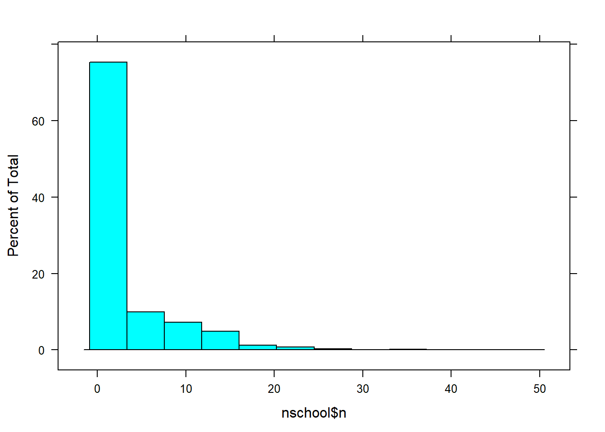

Prior problem behavior and suspensions: A replication
This post accompanies the article (this was originally submitted as an Issue Brief which is why the Discussion section and Introduction are so short):
Huang, F. (2020). Prior problem behaviors do not account for the racial suspension gap. Educational Researcher. Advance online publication.
Load required packages and dataset
NOTE: the dataset and manual are available at the following links (the syntax below uses the SPSS data file).
- https://nces.ed.gov/ecls/data/ECLSK_K8_Manual_part1.pdf
- Download the original ECLS-k 1887-99 dataset from EDAT: https://nces.ed.gov/OnlineCodebook
The commented part loads the dataset and selects the variables of interest.
library(dplyr)
library(survey)
library(summarytools)
library(tableone)
library(jtools)
library(psych)
library(sjmisc)
setwd("C:/Users/huangf/Google Drive/Projects/wright_reanalysis")
dat <- rio::import('d:/data/eclsk/eclsk_98_99_k8_child_v1_0.sav')
takes a while since the file is big
names(dat) <- tolower(names(dat))
sm <- filter(dat, s7pupri == 1, race %in% c(1,2)) %>% #black or white students only
select(race, gender, p7fights, p7cheats, p7steals,
p7suspnd, p7numsus, p7schgrd, w8pared, w8povrty,
p7good, p7drugs, p7violnc, p7learng, s7blkpct, s7enrls,
s7flch_i, s7rlch_i, s7_id,
t1contro, t1interp, t1extern, t1learn,
t4contro, t4interp, t4extern, t4learn,
t5contro, t5interp, t5extern, t5learn,
t6contro, t6interp, t6extern, t6learn,
p1contro, p1social, p1impuls, p1learn,
p4contro, p4social, p4impuls, p4learn,
u6riep, s7rlch_i, j71race5, j72race5, c1_7fc0,
j71t_id, j72t_id, j71class, j72class) #c1_7sc0 c1_7fc0 weight F7RIEP
summarytools::dfSummary(sm) %>% view()
sm[sm < 0] <- NA #NAs to values < 0
save(sm, file = 'eclsk2_orig.rdata')
rm(list = ls()) #clean workspace
load("C:/Users/huangf/Google Drive/Projects/wright_reanalysis/eclsk2_orig.rdata")
Create the scales and indices used for analyses:
sm <- select(sm, -p7numsus) #remove number times suspended, not needed
sm <- mutate(sm,
race = factor(race, labels = c('w', 'b')),
male = case_when(
gender == 1 ~ 1,
gender == 2 ~ 0
),
poverty = case_when(
w8povrty == 1 ~ 1, #below poverty
w8povrty == 2 ~ 0
),
delin = (p7fights + p7cheats + p7steals) / 3,
badschool = (p7good + (6 - p7drugs) + (6 - p7violnc) + p7learng) / 4,
sus = case_when(
p7suspnd == 1 ~ 1,
p7suspnd == 2 ~ 0),
pared = 10 - w8pared, #reverse coding
iep = case_when(
u6riep == 1 ~ 1,
TRUE ~ 0),
tm = case_when( #teacher race missing / just in case
is.na(j72race5) & is.na(j71race5) ~ 1,
TRUE ~ 0),
pp.parent = ((5 - p1contro) + (5 - p1social) + p1impuls + ## Parent-reported PPB
(5 - p4contro) + (5 - p4social) + p4impuls) / 2, ## divided by 2 years
prob = ((5 - t5contro) + (5 - t5interp) + t5extern + (5 - t5learn) + ##PPB
(5 - t4contro) + (5 - t4interp) + t4extern + (5 - t4learn) +
(5 - t1contro) + (5 - t1interp) + t1extern + (5 - t1learn)) / 3, # divided by 3 years
probred = ((5 - t5contro) + (5 - t5interp) + t5extern + ##PPB w/out ATL
(5 - t4contro) + (5 - t4interp) + t4extern +
(5 - t1contro) + (5 - t1interp) + t1extern) / 3,
prob2 = (5 - t6contro) + (5 - t6interp) + t6extern , ## PPB in spring 5th grade
extern = (t1extern + t4extern + t5extern) / 3 ## Externalizing as PPB
)
sm2 <- select(sm, -p7suspnd, -gender, -p7fights, -p7cheats, -p7steals, -w8pared,
-w8povrty, -p7good, -p7drugs, -p7violnc, -p7learng, -u6riep, -s7rlch_i,
-j72race5, -j71race5, -starts_with("p1"), -starts_with("p4"),
-starts_with("t1"), -starts_with('t5'), -starts_with('t6'),
-starts_with('t4'),
-j71class, -j72class, -j71t_id, -j72t_id #if not using orig
) #teacher ids
sm2$c1_7fc0[is.na(sm2$c1_7fc0)] <- 0 #missing weight, make it zero / not using it
Conduct some prior investigation prior to analyses:
### FOR MODEL 1:::
sm3 <- select(sm2, -starts_with("prob"), -pp.parent, -extern, prob, probred)
#mice::md.pattern(sm3, rotate.names = T, plot = F)
#sm3 <- na.omit(sm3)
How many students per school and how many schools?
nschool <- sm3 %>%
group_by(s7_id) %>%
summarise(n = n()) %>% arrange(desc(n))
## `summarise()` ungrouping output (override with `.groups` argument)lattice::histogram(nschool$n) #1591 schools originally
### investigating weights
sum(sm3$c1_7fc0 == 0) #901
## [1] 901nrow(sm3) #5481## [1] 54815481 - 901 #number with nonzero weights## [1] 4580tmp <- filter(sm3, c1_7fc0 != 0)
# mice::md.pattern(tmp, rotate.names = T) #missing data patternsWere weights used? Based on this, weights were not used in Wright et al. Numbers will not add up, additional checks conducted (not shown).
sm3 <- filter(sm3, !is.na(s7enrls), !is.na(poverty),
!is.na(pared), !is.na(sus), !is.na(delin),
!is.na(badschool), !is.na(p7schgrd),
!is.na(s7blkpct))
vars = c('sus', 'race', 'male', 'iep', 'p7schgrd', 'pared', 'poverty',
's7blkpct', 's7enrls', 'badschool', 'delin', 's7flch_i')
NOTE: there are 29 students (< 1% of sample) that had
schools that did not give grades
TABLE 1 creation
t1 <- CreateTableOne(data = sm3, vars = vars,
factorVars = c('sus', 'poverty', 'male', 'iep'))
res <- print(t1, contDigits = 3, showAllLevels = T, minMax = T)
##
## level Overall
## n 4360
## sus (%) 0 3729 (85.5)
## 1 631 (14.5)
## race (%) w 3789 (86.9)
## b 571 (13.1)
## male (%) 0 2143 (49.2)
## 1 2217 (50.8)
## iep (%) 0 3884 (89.1)
## 1 476 (10.9)
## p7schgrd (mean (SD)) 1.695 (0.862)
## pared (mean (SD)) 4.678 (1.800)
## poverty (%) 0 3832 (87.9)
## 1 528 (12.1)
## s7blkpct (mean (SD)) 2.936 (1.250)
## s7enrls (mean (SD)) 3.945 (1.065)
## badschool (mean (SD)) 1.794 (0.581)
## delin (mean (SD)) 1.077 (0.217)
## s7flch_i (mean (SD)) 28.580 (21.136)#write.csv(res, file = 'output/t1_2.csv')
table(sm3$s7_id) %>% length() #1270 schools## [1] 1270#4360/1270 = 3.43 students per school
# not weighted // used for cluster robust SEs
des <- svydesign(ids = ~s7_id, data = sm3, weights = ~1)
# testing out multiway clustering using teachers, not shown
#des.t <- svydesign(ids = ~j71t_id + j72t_id, data = sm3, weights = ~1)
### // Table below is testing to see if weights were used
### NOT used for actual analysis
des.w <- svydesign(data = sm3, ids = ~s7_id, weights = ~c1_7fc0)
t2 <- svyCreateTableOne(data = des.w, vars = vars,
factorVars = c('sus', 'poverty', 'male', 'iep'))
print(t2)##
## Overall
## n 1923843.5
## sus = 1 (%) 358314.6 (18.6)
## race = b (%) 383126.3 (19.9)
## male = 1 (%) 995846.0 (51.8)
## iep = 1 (%) 222004.6 (11.5)
## p7schgrd (mean (SD)) 1.76 (0.91)
## pared (mean (SD)) 4.76 (1.81)
## poverty = 1 (%) 274879.5 (14.3)
## s7blkpct (mean (SD)) 3.16 (1.30)
## s7enrls (mean (SD)) 4.09 (0.99)
## badschool (mean (SD)) 1.83 (0.60)
## delin (mean (SD)) 1.10 (0.25)
## s7flch_i (mean (SD)) 29.93 (22.78)Does not match Wright’s paper in terms of race breakdown (19.9% vs. 14.5% Black). Does not look like weights were used and no mention in original paper.
Results
Percent of Black vs. White suspended without covariates: 32.9 vs 11.7– 21.2 percentage point difference.
ctable(sm3$race, sm3$sus)## Cross-Tabulation, Row Proportions
## race * sus
## Data Frame: sm3
##
## ------- ----- -------------- ------------- ---------------
## sus 0 1 Total
## race
## w 3346 (88.3%) 443 (11.7%) 3789 (100.0%)
## b 383 (67.1%) 188 (32.9%) 571 (100.0%)
## Total 3729 (85.5%) 631 (14.5%) 4360 (100.0%)
## ------- ----- -------------- ------------- --------------- test1 <- lm(sus ~ race, data = sm3)
summary(test1) #testing LPM##
## Call:
## lm(formula = sus ~ race, data = sm3)
##
## Residuals:
## Min 1Q Median 3Q Max
## -0.3292 -0.1169 -0.1169 -0.1169 0.8831
##
## Coefficients:
## Estimate Std. Error t value Pr(>|t|)
## (Intercept) 0.116917 0.005597 20.89 <2e-16 ***
## raceb 0.212330 0.015467 13.73 <2e-16 ***
## ---
## Signif. codes: 0 '***' 0.001 '**' 0.01 '*' 0.05 '.' 0.1 ' ' 1
##
## Residual standard error: 0.3445 on 4358 degrees of freedom
## Multiple R-squared: 0.04145, Adjusted R-squared: 0.04123
## F-statistic: 188.5 on 1 and 4358 DF, p-value: < 2.2e-16 nobs(test1) #4360## [1] 4360 #(4360 - 4101) / 4360 #6% moreModel results: Replication
m0 <- svyglm(sus ~ race, family = 'binomial', design = des)
nobs(m0)## [1] 4360summ(m0, exp = T, digits = 2, confint = T)| Observations | 4360 |
| Dependent variable | sus |
| Type | Survey-weighted generalized linear model |
| Family | binomial |
| Link | logit |
| Pseudo-R² (Cragg-Uhler) | 0.02 |
| Pseudo-R² (McFadden) | 0.04 |
| AIC | 3461.29 |
| exp(Est.) | 2.5% | 97.5% | t val. | p | |
|---|---|---|---|---|---|
| (Intercept) | 0.13 | 0.12 | 0.15 | -33.73 | 0.00 |
| raceb | 3.71 | 2.99 | 4.59 | 12.03 | 0.00 |
| Standard errors: Robust |
#base odds ratio:: not reported in tables, only in text
m1 <- svyglm(sus ~ race + male + p7schgrd + iep + pared + poverty +
s7enrls + s7flch_i + badschool + s7blkpct + delin,
family = 'binomial', design = des)
m2 <- update(m1, . ~ . + prob)
only use those without missing data
nomiss <- na.omit(sm3) #for models 3 and 4
des.red <- svydesign(ids = ~s7_id, data = nomiss, weights = ~1)
m3 <- update(m1, . ~ ., design = des.red)
m4 <- update(m3, . ~ . - prob + probred)
mean(nomiss$probred)
## [1] 5.291927sd(nomiss$probred)## [1] 1.355125## TABLE 2
export_summs(m1, m2, m3, m4, exp = T, confint = T,
error_format = "({conf.low}, {conf.high})")| Model 1 | Model 2 | Model 3 | Model 4 | |
| (Intercept) | 0.00 *** | 0.00 *** | 0.00 *** | 0.00 *** |
| (0.00, 0.00) | (0.00, 0.00) | (0.00, 0.00) | (0.00, 0.00) | |
| raceb | 1.92 *** | 1.18 | 1.40 | 1.16 |
| (1.38, 2.69) | (0.74, 1.85) | (0.90, 2.17) | (0.73, 1.83) | |
| male | 2.72 *** | 2.08 *** | 2.52 *** | 2.10 *** |
| (2.21, 3.35) | (1.59, 2.73) | (1.94, 3.28) | (1.61, 2.75) | |
| p7schgrd | 1.53 *** | 1.42 *** | 1.56 *** | 1.46 *** |
| (1.38, 1.70) | (1.23, 1.64) | (1.36, 1.79) | (1.27, 1.68) | |
| iep | 1.07 | 0.90 | 1.17 | 0.93 |
| (0.81, 1.41) | (0.64, 1.28) | (0.83, 1.65) | (0.66, 1.32) | |
| pared | 1.07 * | 1.10 * | 1.13 ** | 1.10 * |
| (1.00, 1.14) | (1.01, 1.19) | (1.04, 1.22) | (1.01, 1.19) | |
| poverty | 0.98 | 0.85 | 0.92 | 0.86 |
| (0.73, 1.31) | (0.57, 1.26) | (0.61, 1.37) | (0.58, 1.28) | |
| s7enrls | 1.08 | 1.16 * | 1.13 | 1.16 * |
| (0.97, 1.21) | (1.00, 1.35) | (0.98, 1.31) | (1.01, 1.35) | |
| s7flch_i | 1.01 * | 1.00 | 1.00 | 1.00 |
| (1.00, 1.01) | (0.99, 1.01) | (1.00, 1.01) | (0.99, 1.01) | |
| badschool | 1.56 *** | 1.73 *** | 1.68 *** | 1.73 *** |
| (1.32, 1.83) | (1.41, 2.12) | (1.37, 2.07) | (1.42, 2.13) | |
| s7blkpct | 1.17 ** | 1.27 *** | 1.25 ** | 1.27 *** |
| (1.05, 1.30) | (1.11, 1.45) | (1.09, 1.42) | (1.11, 1.45) | |
| delin | 7.28 *** | 7.26 *** | 10.16 *** | 7.13 *** |
| (4.77, 11.11) | (3.97, 13.29) | (5.63, 18.32) | (3.90, 13.03) | |
| prob | 1.31 *** | |||
| (1.21, 1.41) | ||||
| probred | 1.44 *** | |||
| (1.31, 1.58) | ||||
| N | 4360 | 2892 | 2892 | 2892 |
| R2 | ||||
| *** p < 0.001; ** p < 0.01; * p < 0.05. | ||||
The following table notes the differences in the original and the current reanalyses for the odds ratios (ORs) for Black students:
| Model | Original | Replication |
|---|---|---|
| No covariates | 3.78 | 3.71 |
| w/added covariates | 1.89 | 1.92 |
| w/added problem behavior | 1.20 | 1.18 |
In the appendix (using linear probability models)
## Using a linear probability model, for appendix
m1.lpm <- update(m1, family = 'gaussian')
m2.lpm <- update(m2, family = 'gaussian')
m3.lpm <- update(m3, family = 'gaussian')
m4.lpm <- update(m4, family = 'gaussian')
export_summs(m1.lpm, m2.lpm, m3.lpm, m4.lpm,
model.names = c('LPM1', 'LPM2', 'LPM3' ,'LPM4'))| LPM1 | LPM2 | LPM3 | LPM4 | |
| (Intercept) | -0.60 *** | -0.78 *** | -0.67 *** | -0.79 *** |
| (0.04) | (0.05) | (0.05) | (0.05) | |
| raceb | 0.10 *** | 0.04 | 0.05 | 0.04 |
| (0.02) | (0.03) | (0.03) | (0.03) | |
| male | 0.09 *** | 0.06 *** | 0.08 *** | 0.06 *** |
| (0.01) | (0.01) | (0.01) | (0.01) | |
| p7schgrd | 0.05 *** | 0.04 *** | 0.05 *** | 0.04 *** |
| (0.01) | (0.01) | (0.01) | (0.01) | |
| iep | 0.01 | -0.01 | 0.02 | -0.01 |
| (0.02) | (0.02) | (0.02) | (0.02) | |
| pared | 0.00 | 0.01 | 0.01 ** | 0.01 * |
| (0.00) | (0.00) | (0.00) | (0.00) | |
| poverty | -0.00 | -0.02 | -0.01 | -0.01 |
| (0.02) | (0.02) | (0.02) | (0.02) | |
| s7enrls | 0.01 | 0.01 | 0.01 | 0.01 |
| (0.01) | (0.01) | (0.01) | (0.01) | |
| s7flch_i | 0.00 * | 0.00 | 0.00 | 0.00 |
| (0.00) | (0.00) | (0.00) | (0.00) | |
| badschool | 0.05 *** | 0.05 *** | 0.05 *** | 0.05 *** |
| (0.01) | (0.01) | (0.01) | (0.01) | |
| s7blkpct | 0.02 * | 0.02 ** | 0.02 ** | 0.02 ** |
| (0.01) | (0.01) | (0.01) | (0.01) | |
| delin | 0.35 *** | 0.36 *** | 0.39 *** | 0.35 *** |
| (0.03) | (0.04) | (0.04) | (0.04) | |
| prob | 0.03 *** | |||
| (0.00) | ||||
| probred | 0.04 *** | |||
| (0.01) | ||||
| N | 4360 | 2892 | 2892 | 2892 |
| R2 | 0.18 | 0.19 | 0.18 | 0.20 |
| *** p < 0.001; ** p < 0.01; * p < 0.05. | ||||
NOTE: the result of this is that without PPB, the difference of Black vs. White students is 5 percentage points. Once PPB is included, the coefficient reduces to 4 percentage points. If model 1 and 3 are compared, the difference reduces from 10 percentage points to 5 percentage points- just by excluding students from the analyses; not as a result of including other variables. Although I refer to the results as statistically significant or not in the manuscript, I do not place a large emphasis on this considering the difference of 5 to 4 percentage points.
Testing just using base R
base.1 <- glm(sus ~ race + male + p7schgrd + iep + pared + poverty +
s7enrls + s7flch_i + badschool + s7blkpct + delin,
family = 'binomial', data = sm3)
base.2 <- update(base.1, . ~ . + prob)
base.3 <- update(base.1, data = nomiss)
base.4 <- update(base.3, . ~ . - prob + probred)
can use the above for logistic reg models too (w/out CRSE)
lpm.1 <- update(base.1, family = 'gaussian')
lpm.2 <- update(base.2, family = 'gaussian')
lpm.3 <- update(base.3, family = 'gaussian')
lpm.4 <- update(base.4, family = 'gaussian')
crobust <- function(x, cluster){
require(sandwich)
require(lmtest)
vc <- vcovCL(x, cluster)
print(coeftest(x, vc, type = 'HC3'))
print(nobs(x))
}
Appendix results:::
crobust(lpm.1, sm3$s7_id)
##
## z test of coefficients:
##
## Estimate Std. Error z value Pr(>|z|)
## (Intercept) -0.60029463 0.04348118 -13.8058 < 2.2e-16 ***
## raceb 0.10495737 0.02472167 4.2456 2.180e-05 ***
## male 0.09325706 0.00983488 9.4823 < 2.2e-16 ***
## p7schgrd 0.05412020 0.00724559 7.4694 8.056e-14 ***
## iep 0.00904895 0.01751388 0.5167 0.60538
## pared 0.00487380 0.00309680 1.5738 0.11553
## poverty -0.00064021 0.01941967 -0.0330 0.97370
## s7enrls 0.00824881 0.00564689 1.4608 0.14408
## s7flch_i 0.00092579 0.00040120 2.3075 0.02103 *
## badschool 0.05011285 0.01015244 4.9360 7.972e-07 ***
## s7blkpct 0.01539202 0.00605994 2.5400 0.01109 *
## delin 0.34750308 0.03220616 10.7900 < 2.2e-16 ***
## ---
## Signif. codes: 0 '***' 0.001 '**' 0.01 '*' 0.05 '.' 0.1 ' ' 1
##
## [1] 4360crobust(lpm.2, sm3$s7_id)##
## z test of coefficients:
##
## Estimate Std. Error z value Pr(>|z|)
## (Intercept) -0.77680759 0.05464652 -14.2151 < 2.2e-16 ***
## raceb 0.04051014 0.02900649 1.3966 0.162537
## male 0.05725491 0.01110664 5.1550 2.536e-07 ***
## p7schgrd 0.03875112 0.00878865 4.4092 1.037e-05 ***
## iep -0.00867224 0.02042098 -0.4247 0.671075
## pared 0.00673572 0.00345587 1.9491 0.051288 .
## poverty -0.01565528 0.02419323 -0.6471 0.517572
## s7enrls 0.01128357 0.00622456 1.8127 0.069871 .
## s7flch_i 0.00025979 0.00040928 0.6348 0.525588
## badschool 0.05238607 0.01205695 4.3449 1.393e-05 ***
## s7blkpct 0.02152153 0.00663358 3.2443 0.001177 **
## delin 0.35750107 0.04310882 8.2930 < 2.2e-16 ***
## prob 0.02591989 0.00428678 6.0465 1.480e-09 ***
## ---
## Signif. codes: 0 '***' 0.001 '**' 0.01 '*' 0.05 '.' 0.1 ' ' 1
##
## [1] 2892crobust(lpm.3, nomiss$s7_id)##
## z test of coefficients:
##
## Estimate Std. Error z value Pr(>|z|)
## (Intercept) -0.67076437 0.05179495 -12.9504 < 2.2e-16 ***
## raceb 0.05454780 0.02924385 1.8653 0.062143 .
## male 0.07688549 0.01104251 6.9627 3.339e-12 ***
## p7schgrd 0.05057229 0.00880463 5.7438 9.256e-09 ***
## iep 0.01589712 0.02091340 0.7601 0.447171
## pared 0.00932337 0.00346048 2.6942 0.007055 **
## poverty -0.00616123 0.02471882 -0.2493 0.803165
## s7enrls 0.00998599 0.00630012 1.5850 0.112955
## s7flch_i 0.00028935 0.00041578 0.6959 0.486480
## badschool 0.05249989 0.01228170 4.2746 1.914e-05 ***
## s7blkpct 0.02093809 0.00670406 3.1232 0.001789 **
## delin 0.39425958 0.04261961 9.2507 < 2.2e-16 ***
## ---
## Signif. codes: 0 '***' 0.001 '**' 0.01 '*' 0.05 '.' 0.1 ' ' 1
##
## [1] 2892crobust(lpm.4, nomiss$s7_id)##
## z test of coefficients:
##
## Estimate Std. Error z value Pr(>|z|)
## (Intercept) -0.78514134 0.05452074 -14.4008 < 2.2e-16 ***
## raceb 0.03890813 0.02888829 1.3468 0.178029
## male 0.05749608 0.01099448 5.2295 1.699e-07 ***
## p7schgrd 0.04108124 0.00872305 4.7095 2.483e-06 ***
## iep -0.00552547 0.02020899 -0.2734 0.784533
## pared 0.00679853 0.00345221 1.9693 0.048915 *
## poverty -0.01452303 0.02408642 -0.6030 0.546539
## s7enrls 0.01157692 0.00621205 1.8636 0.062375 .
## s7flch_i 0.00026374 0.00040560 0.6502 0.515538
## badschool 0.05244704 0.01200611 4.3684 1.252e-05 ***
## s7blkpct 0.02129766 0.00661100 3.2215 0.001275 **
## delin 0.35273985 0.04302005 8.1994 2.415e-16 ***
## probred 0.03670807 0.00553206 6.6355 3.234e-11 ***
## ---
## Signif. codes: 0 '***' 0.001 '**' 0.01 '*' 0.05 '.' 0.1 ' ' 1
##
## [1] 2892Back to the manuscript…
Difference of stayers vs. leavers
m.dat <- sm2
m.dat$mss <- rowSums(is.na(select(sm2, race:iep)))
m.dat$mss2 <- rowSums(is.na(select(sm2, prob)))
m.dat2 <- dplyr::filter(m.dat, mss == 0) %>%
select(race:iep, prob, mss2) #no missing vars, exc prob
vars <- names(select(m.dat2, race:iep, -c1_7fc0, -s7_id))
stay <- svydesign(ids = ~s7_id, weights = ~1, data = m.dat2)
c1 <- svyCreateTableOne(data = stay, vars = vars)
c2 <- svyCreateTableOne(data = stay, vars = vars,
strata = 'mss2')
comp1 <- print(c1, contDigits = 3, showAllLevels = T)
##
## level Overall
## n 4360.0
## race (%) w 3789.0 (86.9)
## b 571.0 (13.1)
## p7schgrd (mean (SD)) 1.695 (0.862)
## s7blkpct (mean (SD)) 2.936 (1.250)
## s7enrls (mean (SD)) 3.945 (1.065)
## s7flch_i (mean (SD)) 28.580 (21.136)
## male (mean (SD)) 0.508 (0.500)
## poverty (mean (SD)) 0.121 (0.326)
## delin (mean (SD)) 1.077 (0.217)
## badschool (mean (SD)) 1.794 (0.581)
## sus (mean (SD)) 0.145 (0.352)
## pared (mean (SD)) 4.678 (1.800)
## iep (mean (SD)) 0.109 (0.312)## TABLE 3
comp2 <- print(c2, contDigits = 3, showAllLevels = T, smd =T)## Stratified by mss2
## level 0 1 p test
## n 2892.0 1468.0
## race (%) w 2581.0 (89.2) 1208.0 (82.3) <0.001
## b 311.0 (10.8) 260.0 (17.7)
## p7schgrd (mean (SD)) 1.658 (0.844) 1.768 (0.893) 0.001
## s7blkpct (mean (SD)) 2.841 (1.228) 3.125 (1.272) <0.001
## s7enrls (mean (SD)) 3.928 (1.070) 3.979 (1.053) 0.470
## s7flch_i (mean (SD)) 27.784 (20.495) 30.149 (22.269) 0.057
## male (mean (SD)) 0.497 (0.500) 0.532 (0.499) 0.023
## poverty (mean (SD)) 0.101 (0.301) 0.161 (0.367) <0.001
## delin (mean (SD)) 1.072 (0.205) 1.087 (0.238) 0.035
## badschool (mean (SD)) 1.796 (0.573) 1.790 (0.595) 0.790
## sus (mean (SD)) 0.125 (0.331) 0.183 (0.387) <0.001
## pared (mean (SD)) 4.653 (1.772) 4.728 (1.853) 0.318
## iep (mean (SD)) 0.103 (0.304) 0.122 (0.327) 0.068
## Stratified by mss2
## SMD
## n
## race (%) 0.200
##
## p7schgrd (mean (SD)) 0.126
## s7blkpct (mean (SD)) 0.227
## s7enrls (mean (SD)) 0.048
## s7flch_i (mean (SD)) 0.110
## male (mean (SD)) 0.071
## poverty (mean (SD)) 0.178
## delin (mean (SD)) 0.070
## badschool (mean (SD)) 0.010
## sus (mean (SD)) 0.161
## pared (mean (SD)) 0.042
## iep (mean (SD)) 0.061See paper for discussion of differences of stayers and leavers.
Testing alternative models
NOTE: Models 5 & 6 (using multiple imputation) are at the end of the syntax.
MODELS 7 & 8: Using grade 5 PPB
tmp <- select(sm2, -pp.parent, -prob, -probred, -extern)
g5 <- na.omit(tmp)#3946
des3 <- svydesign(ids = ~s7_id, data = g5, weights = ~1)
m8 <- update(m2, . ~ . + prob2 - prob, design = des3) #with parent reported
m7 <- update(m8, . ~ . - prob2) #baseline
summ(m7, exp = T, confint = T, digits = 4) #model 7
summ(m8, exp = T, confint = T, digits = 4) #model 8
export_summs(m7, m8, confint = T, exp = T, digits = 2,
error_format = "({conf.low}, {conf.high})",
model.names = c('Model 7', 'Model 8'))
| Model 7 | Model 8 | |
| (Intercept) | 0.00 *** | 0.00 *** |
| (0.00, 0.00) | (0.00, 0.00) | |
| raceb | 1.86 *** | 1.67 ** |
| (1.30, 2.67) | (1.16, 2.42) | |
| male | 2.75 *** | 2.18 *** |
| (2.21, 3.42) | (1.74, 2.72) | |
| p7schgrd | 1.55 *** | 1.41 *** |
| (1.38, 1.73) | (1.26, 1.58) | |
| iep | 1.09 | 0.95 |
| (0.82, 1.44) | (0.71, 1.26) | |
| pared | 1.10 ** | 1.08 * |
| (1.03, 1.18) | (1.00, 1.15) | |
| poverty | 0.86 | 0.85 |
| (0.63, 1.17) | (0.62, 1.16) | |
| s7enrls | 1.10 | 1.12 |
| (0.98, 1.24) | (0.99, 1.26) | |
| s7flch_i | 1.01 | 1.01 |
| (1.00, 1.01) | (1.00, 1.01) | |
| badschool | 1.53 *** | 1.52 *** |
| (1.29, 1.81) | (1.28, 1.80) | |
| s7blkpct | 1.20 ** | 1.21 ** |
| (1.07, 1.34) | (1.07, 1.36) | |
| delin | 6.76 *** | 4.24 *** |
| (4.33, 10.55) | (2.74, 6.58) | |
| prob2 | 1.44 *** | |
| (1.35, 1.54) | ||
| N | 3946 | 3946 |
| R2 | ||
| *** p < 0.001; ** p < 0.01; * p < 0.05. | ||
mean(g5$prob2)## [1] 5.306467sd(g5$prob2)## [1] 1.625656MODELS 9 & 10: Using parent-reported PPB
tmp2 <- select(sm2, -prob, -prob2, -probred, -extern)
parent.3 <- na.omit(tmp2)
p.des <- svydesign(ids = ~s7_id, data = parent.3, weights = ~1)
m9 <- svyglm(sus ~ race + male + iep + p7schgrd + pared +
poverty + s7enrls + s7flch_i + badschool +
s7blkpct + s7enrls + delin, family = 'binomial',
design = p.des)
m10 <- update(m9, . ~ . + pp.parent)
# summ(m9, exp = T, confint = T) #model 9
# summ(m10, exp = T, confint = T) #model 10
mean(parent.3$pp.parent)
## [1] 5.529882sd(parent.3$pp.parent)## [1] 1.012398MODELS 11 & 12: Using externalizing behavior as PPB
ext <- select(sm2, s7_id, sus, race, male , p7schgrd,
iep, pared, poverty, s7enrls, s7flch_i, badschool,
s7blkpct, delin, extern)
ext2 <- na.omit(ext) #n = 3128
des.ext <- svydesign(ids = ~s7_id, data = ext2, weights = ~1)
m12 <- update(m2, . ~ . + extern - prob, design = des.ext)
m11 <- update(m12, . ~ . - extern) #baseline
m11 <- svyglm(sus ~ race + male + iep + p7schgrd + pared + poverty +
s7enrls + s7flch_i + badschool + s7blkpct + s7enrls + delin,
family = 'binomial', design = des.ext)
m12 <- update(m11, . ~ . + extern)
summ(m11, exp = T, confint = T, digits = 4) #model 11
summ(m12, exp = T, confint = T, digits = 4) #model 12
mean(ext2$extern)
## [1] 1.615575sd(ext2$extern)## [1] 0.5010824export_summs(m9, m10, m11, m12, confint = T, exp = T,
error_format = "({conf.low}, {conf.high})",
model.names = c('Model 9', 'Model 10', 'Model 11',
'Model 12'))| Model 9 | Model 10 | Model 11 | Model 12 | |
| (Intercept) | 0.00 *** | 0.00 *** | 0.00 *** | 0.00 *** |
| (0.00, 0.00) | (0.00, 0.00) | (0.00, 0.00) | (0.00, 0.00) | |
| raceb | 1.91 *** | 1.90 ** | 1.52 | 1.28 |
| (1.31, 2.80) | (1.29, 2.78) | (0.98, 2.35) | (0.81, 2.01) | |
| male | 2.79 *** | 2.69 *** | 2.64 *** | 2.18 *** |
| (2.20, 3.53) | (2.12, 3.40) | (2.05, 3.40) | (1.68, 2.82) | |
| iep | 1.11 | 1.03 | 1.21 | 0.98 |
| (0.82, 1.51) | (0.76, 1.41) | (0.88, 1.67) | (0.70, 1.37) | |
| p7schgrd | 1.55 *** | 1.52 *** | 1.53 *** | 1.45 *** |
| (1.38, 1.73) | (1.36, 1.71) | (1.34, 1.74) | (1.27, 1.65) | |
| pared | 1.05 | 1.04 | 1.10 * | 1.08 |
| (0.98, 1.13) | (0.97, 1.11) | (1.02, 1.19) | (0.99, 1.17) | |
| poverty | 0.93 | 0.91 | 0.88 | 0.85 |
| (0.66, 1.30) | (0.65, 1.27) | (0.60, 1.30) | (0.58, 1.25) | |
| s7enrls | 1.10 | 1.11 | 1.14 | 1.17 * |
| (0.97, 1.26) | (0.97, 1.26) | (0.99, 1.31) | (1.01, 1.35) | |
| s7flch_i | 1.01 * | 1.01 * | 1.01 | 1.00 |
| (1.00, 1.02) | (1.00, 1.01) | (1.00, 1.01) | (1.00, 1.01) | |
| badschool | 1.50 *** | 1.49 *** | 1.63 *** | 1.71 *** |
| (1.24, 1.81) | (1.23, 1.80) | (1.34, 1.97) | (1.41, 2.07) | |
| s7blkpct | 1.21 ** | 1.21 ** | 1.20 ** | 1.22 ** |
| (1.07, 1.36) | (1.07, 1.36) | (1.06, 1.37) | (1.07, 1.39) | |
| delin | 8.45 *** | 6.94 *** | 10.66 *** | 7.54 *** |
| (5.41, 13.20) | (4.44, 10.86) | (6.22, 18.28) | (4.33, 13.12) | |
| pp.parent | 1.22 *** | |||
| (1.10, 1.35) | ||||
| extern | 2.75 *** | |||
| (2.21, 3.43) | ||||
| N | 3773 | 3773 | 3128 | 3128 |
| R2 | ||||
| *** p < 0.001; ** p < 0.01; * p < 0.05. | ||||
Using multiple imputation
library(mice)
Removing scales so they can be created after imputation:: MODELS 5 & 6
mitest <- filter(sm, !is.na(sus)) #removing missing outcome
mitest <- select(mitest, -gender, -p7suspnd, -prob, -probred, -prob2, -w8povrty,
-delin, -u6riep, -pp.parent, -badschool, -w8pared,
-starts_with('t6'), -extern)
md.pattern(mitest, rotate.names = T, plot = F)
change into factors so will be imputed properly
mitest$male <- factor(mitest$male)
mitest$sus <- factor(mitest$sus)
mitest$poverty <- factor(mitest$poverty)
mitest$iep <- factor(mitest$iep)
n = 4918
Using JOMO (joing modeling) to perform the imputations:
### using parent reports and T6 as auxilliary variables
library(mitml)## *** This is beta software. Please report any bugs!
## *** See the NEWS file for recent changes.library(miceadds)## * miceadds 3.9-14 (2020-05-09 11:27:27)mitest$id <- factor(mitest$s7_id) #no character variables
l1 <- list(
sus + race + male + p7schgrd + iep + poverty +
t1contro + t4contro + t5contro +
t1extern + t4extern + t5extern +
t1interp + t4interp + t5interp +
t1learn + t4learn + t5learn +
p7fights + p7cheats + p7steals +
p7good + p7drugs + p7violnc + p7learng ~ 1 + (1|id),
s7enrls + s7flch_i + s7blkpct ~ 1)
Line below runs the imputation: takes a while…
imp <- jomoImpute(mitest, formula = l1, n.burn = 100, n.iter = 100, m = 2, seed = 123)
save(imp, file = 'imp.rdata')
load(file = 'C:/Users/huangf/Google Drive/Projects/wright_reanalysis/imp.rdata')
loads imputed datasets
summary(imp)
imp2 <- mitmlComplete(imp, 'all')
imp2a <- within(imp2,{
delin = (p7fights + p7cheats + p7steals) / 3
badschool = (p7good + (6 - p7drugs) + (6 - p7violnc) + p7learng) / 4
prob = ((5 - t5contro) + (5 - t5interp) + t5extern + (5 - t5learn) +
(5 - t4contro) + (5 - t4interp) + t4extern + (5 - t4learn) +
(5 - t1contro) + (5 - t1interp) + t1extern + (5 - t1learn)) / 3
}
)
After the imputation, create the scales. Then place them in a list to be able to perform the analysis:
IMPUTATION ANALYSIS
These are models 5 and 6.
library(mitools)
imp3a <- imputationList(imp2a)
des.imp <- svydesign(ids = ~s7_id, weights = ~1, data = imp3a)
m1.imp <- with(des.imp, svyglm(sus ~ race + male + p7schgrd + iep + pared + poverty +
s7enrls + s7flch_i + badschool + s7blkpct + delin,
family = 'binomial'))
m2.imp <- with(des.imp, svyglm(sus ~ race + male + p7schgrd + iep + pared + poverty +
s7enrls + s7flch_i + badschool + s7blkpct + delin + prob,
family = 'binomial'))Results using multiple imputation (in logits, exponentiate to get odds ratios). Results show without PPB, OR = 1.82. With PPB, OR = 1.57.
MIcombine(m1.imp) %>% summary() ## Multiple imputation results:
## with(des.imp, svyglm(sus ~ race + male + p7schgrd + iep + pared +
## poverty + s7enrls + s7flch_i + badschool + s7blkpct + delin,
## family = "binomial"))
## MIcombine.default(m1.imp)
## results se (lower upper) missInfo
## (Intercept) -7.472758993 0.409959551 -8.276302007 -6.669215979 4 %
## raceb 0.599478267 0.160135132 0.285614850 0.913341684 2 %
## male1 1.012626528 0.098627085 0.819320991 1.205932066 0 %
## p7schgrd 0.424098043 0.049492123 0.327094878 0.521101208 1 %
## iep1 0.116673098 0.127728919 -0.133671013 0.367017209 0 %
## pared 0.094740826 0.029580283 0.036764525 0.152717126 0 %
## poverty1 0.006235416 0.135132042 -0.258618545 0.271089377 0 %
## s7enrls 0.066130862 0.057563281 -0.046722941 0.178984664 10 %
## s7flch_i 0.004247477 0.002928228 -0.001491804 0.009986757 2 %
## badschool 0.377847577 0.078689711 0.223618446 0.532076708 1 %
## s7blkpct 0.134802609 0.056312655 0.024393156 0.245212063 11 %
## delin 1.932387111 0.190440736 1.559129884 2.305644338 0 %exp(.60) #without PPB odds ratio for Black students using imputations## [1] 1.822119MIcombine(m2.imp) %>% summary() ## Multiple imputation results:
## with(des.imp, svyglm(sus ~ race + male + p7schgrd + iep + pared +
## poverty + s7enrls + s7flch_i + badschool + s7blkpct + delin +
## prob, family = "binomial"))
## MIcombine.default(m2.imp)
## results se (lower upper) missInfo
## (Intercept) -8.710949930 0.441663414 -9.576687297 -7.84521256 6 %
## raceb 0.446817851 0.164483128 0.124431362 0.76920434 2 %
## male1 0.833847157 0.101304833 0.635293100 1.03240121 1 %
## p7schgrd 0.329923711 0.051870465 0.228258735 0.43158869 2 %
## iep1 -0.136866185 0.131148311 -0.393912474 0.12018010 1 %
## pared 0.072314659 0.030105365 0.013309192 0.13132013 0 %
## poverty1 -0.061141641 0.133379456 -0.322560682 0.20027740 0 %
## s7enrls 0.074901652 0.058675962 -0.040143117 0.18994642 11 %
## s7flch_i 0.004432674 0.002990521 -0.001428721 0.01029407 2 %
## badschool 0.395802183 0.078450099 0.242042669 0.54956170 1 %
## s7blkpct 0.147003022 0.057451884 0.034362449 0.25964360 10 %
## delin 1.626820731 0.191594811 1.251301061 2.00234040 1 %
## prob 0.248969232 0.028512935 0.193070744 0.30486772 9 %exp(.45) #with PPB odds ratio for Black students using imputations## [1] 1.568312nrow(imp2a[[1]]) #nobs## [1] 4918with(des.imp, svymean(~prob)) %>% unlist %>% mean## [1] 7.284339with(des.imp, svyvar(~prob)) %>% unlist %>% mean %>% sqrt()## [1] 1.820266Bonus analyses!
1a. Running this without the 29 students who had no GPA
extra <- filter(sm3, p7schgrd != 6) #less 29 students who did not have grades
nomiss2 <- na.omit(extra)
# model with no covariates
nocov <- glm(sus ~ race, family = 'binomial', data = extra)
# model without PPB
orig <- glm(sus ~ race + male + p7schgrd + iep + pared + poverty +
s7enrls + s7flch_i + badschool + s7blkpct + delin,
family = 'binomial', data = extra) #n = 4331
reduced <- glm(sus ~ race + male + p7schgrd + iep + pared + poverty +
s7enrls + s7flch_i + badschool + s7blkpct + delin,
family = 'binomial', data = nomiss2) #n = 2874
# model with PPB
full <- update(reduced, . ~ . + prob)1b. Trying this as well using the khb approach which accounts for unobserved heterogeneity of the outcome (to make the coefficients comparable):
library(khb) #Karlson, Holm, and Breen procedure for comparing nested models
### NOTE: both models use n = 2,874 only
compareModels(reduced, full, method = 'naive')## Reduced Full perc
## (Intercept) -8.8253 -10.1780 -15.327
## raceb 0.3360 0.1763 47.520
## male 0.8911 0.7173 19.502
## p7schgrd 0.5417 0.4228 21.951
## iep 0.1117 -0.1199 207.292
## pared 0.1132 0.0896 20.864
## poverty -0.1056 -0.1823 -72.607
## s7enrls 0.1178 0.1460 -23.932
## s7flch_i 0.0028 0.0025 9.817
## badschool 0.5037 0.5371 -6.637
## s7blkpct 0.2191 0.2349 -7.236
## delin 2.3113 2.0132 12.898
## prob 0.2549
##
## Pseudo R2 0.26826 0.29279
## Dev. 1728 1684.2
## Null 2168.6 2168.6
## Chisq 440.56 484.42
## Sig *** ***
## Dl 11 12
## BIC 1815.6 1779.7compareModels(reduced, full, method = 'khb')## Reduced Full perc
## (Intercept) -9.1158 -10.1780 -11.652
## raceb 0.3104 0.1763 43.191
## male 0.9030 0.7173 20.563
## p7schgrd 0.5679 0.4228 25.547
## iep 0.1095 -0.1199 209.451
## pared 0.1126 0.0896 20.454
## poverty -0.0908 -0.1823 -100.674
## s7enrls 0.1313 0.1460 -11.197
## s7flch_i 0.0028 0.0025 8.475
## badschool 0.5330 0.5371 -0.772
## s7blkpct 0.2280 0.2349 -3.054
## delin 2.3518 2.0132 14.397
## Resid(prob) 0.2549
## prob 0.2549
##
## Pseudo R2 0.29279 0.29279
## Dev. 1684.2 1684.2
## Null 2168.6 2168.6
## Chisq 484.42 484.42
## Sig *** ***
## Dl 12 12
## BIC 1779.7 1779.7exp(.31) ## equivalent to model 3 - OR = 1.36## [1] 1.363425exp(.18) ## equivalent to model 2 - OR = 1.20## [1] 1.197217coef(nocov)## (Intercept) raceb
## -2.021849 1.310158exp(1.31) ## base: OR = 3.71## [1] 3.706174coef(orig)## (Intercept) raceb male p7schgrd iep pared
## -7.768306342 0.619767500 0.973924622 0.540096094 0.052807299 0.054806908
## poverty s7enrls s7flch_i badschool s7blkpct delin
## -0.003720891 0.069292572 0.007138119 0.431143515 0.162792914 1.960754471exp(.62) ## for model 1 - OR = 1.86## [1] 1.858928k <- khb(reduced, full)
print(k, type = "models") #not cluster robust, just looking at estimates## Reduced Adjusted Full
## (Intercept) -8.8253 *** -9.1158 *** -10.1780 ***
## (0.51012) (0.52400) (0.57031)
## raceb 0.3360 . 0.3104 0.1763
## (0.20020) (0.20308) (0.20432)
## male 0.8911 *** 0.9030 *** 0.7173 ***
## (0.13603) (0.13761) (0.13968)
## p7schgrd 0.5417 *** 0.5679 *** 0.4228 ***
## (0.07845) (0.07933) (0.08077)
## iep 0.1117 0.1095 -0.1199
## (0.18495) (0.18747) (0.19096)
## pared 0.1132 ** 0.1126 ** 0.0896 *
## (0.04067) (0.04106) (0.04119)
## poverty -0.1056 -0.0908 -0.1823
## (0.20197) (0.20333) (0.20375)
## s7enrls 0.1178 . 0.1313 . 0.1460 *
## (0.06677) (0.06785) (0.06797)
## s7flch_i 0.0028 0.0028 0.0025
## (0.00359) (0.00364) (0.00364)
## badschool 0.5037 *** 0.5330 *** 0.5371 ***
## (0.10342) (0.10445) (0.10450)
## s7blkpct 0.2191 *** 0.2280 *** 0.2349 ***
## (0.06066) (0.06125) (0.06129)
## delin 2.3113 *** 2.3518 *** 2.0132 ***
## (0.26396) (0.26733) (0.26915)
## Resid(prob) 0.2549 ***
## (0.03849)
## prob 0.2549 ***
## (0.03849)
##
## Pseudo R2 0.26826 0.29279 0.29279
## Dev. 1728 1684.2 1684.2
## Null 2168.6 2168.6 2168.6
## Chisq 440.56 484.42 484.42
## Sig *** *** ***
## Dl 11 12 12
## BIC 1815.6 1779.7 1779.7